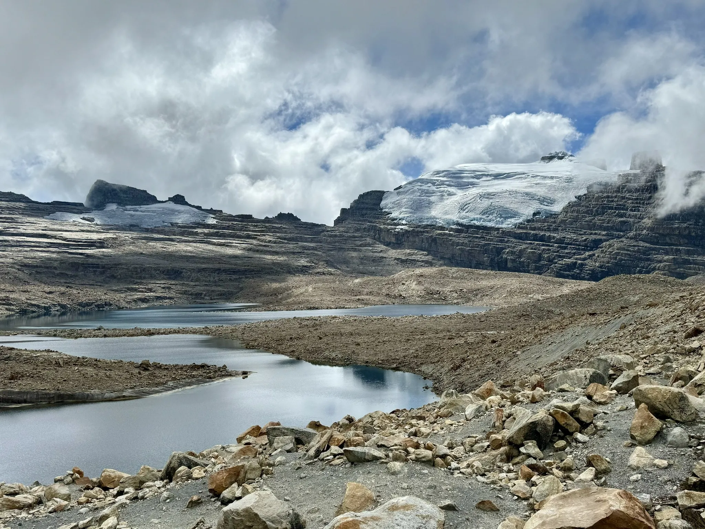

Introduccion

El departamento de Boyacá presenta una variada y diversa flora, lo cual desemboca en una alta variedad de ecosistemas con zonas de páramo bosque húmedo tropical, piedemonte llanero y bosque andino y altoandino; en los cuales se presume haya una alta diversidad de especies. Es así como la construcción de la línea base para el departamento de Boyacá tuvo como objeto identificar y analizar el estado de conocimiento existente de la Biodiversidad en algunos grupos biológicos, encaminada a llenar vacíos de información a través de las expediciones Boyacá Bio.
La lista presentada contiene 6713 registros de especies, pertenecientes a 26 clases, de las cuales corresponden a plantas vasculares: Cycadopsida (1), Equisetopsida (2), Liliopsida (868), Lycopodiopsida (59), Magnoliopsida (3131), Marattiopsida (2), Pinopsida (7), Polypodiopsida (343), Psilotopsida (2). Plantas no vasculares: Andreaeopsida (2), Bryopsida (353), Jungermanniopsida (180), Marchantiopsida (7), Polytrichopsida (12), Sphagnopsida (14). Invertebrados: Insecta (60). Vertebrados: Mammalia (105), Actinopterygii (114), Reptilia (111), Amphibia (91), Aves (1163). Hongos: Agaricomycetes (46), Dothideomycetes (1), Geoglossomycetes (2), Leotiomycetes (17), Sordariomycetes (20).
Boyacá, con más de 470 años de historia, es reconocida por sus ciudades coloniales, su arquitectura sinigual, sus ciclistas que han llegado hasta lo más alto de la montaña, su gente trabajadora, apegada a la religión, a su cultura y sus tradiciones.
El pueblo boyacense en su gran mayoría pertenece al sector rural, se caracteriza por su amor al campo y a la tierra en la que trabajan con dedicación. Históricamente ha sido un pueblo agrícola y su productividad enriquece la gastronomía típica colombiana con productos como las ibias, cubios y rubas, tubérculos que solo crecen en altas zonas montañosas. Son personas que ven la tierra como suya, porque es lo que aman y es en lo que han trabajado toda su vida, pero existe la necesidad de que las personas que viven en estos territorios reconozcan la importancia de los ecosistemas en donde habitan, ecosistemas que son proveedores de agua para el presente y el futuro. Boyacá está rodeada de seis complejos de páramos (Altiplano Cundiboyacense, Pisba, Iguaque – Merchán, Tota – Bijagual – Mamapacha, Guantiva La Rusia y la Sierra Nevada del Cocuy) que hacen de su tierra un lugar mucho más hermoso y atractivo para el que lo quiera visitar.
Sin embargo, al ser comunidades que viven del campo y de lo que este les puede dar, utilizan cualquier medio para lograr una buena cosecha y no tienen en cuenta las consecuencias que este tipo de prácticas pueden traer. Lo más preocupante es que algunos son conscientes de las malas prácticas agrícolas que tienen en sus fincas, pero continúan con ellas porque el mercado exige productos buenos. Por esta razón, la Región Central RAPE, con su Proyecto Páramos tiene como finalidad la conservación y restauración de los servicios ecosistémicos y la biodiversidad asociada a los complejos de páramo y bosque alto andino en la región central; y le apuesta a un proceso que debe estar acompañado de un constate trabajo social que facilite el acompañamiento a las comunidades y su fortalecimiento para generar conciencia ambiental y social frente al territorio.
En el departamento de Boyacá, se observan particularidades en cuatro de sus municipios: Aquitania, Tota, Monguí y Mongua, pertenecientes al complejo de páramo Tota – Bijagual – Mamapacha; en él hay múltiples actores sociales, con diferentes problemáticas y con alto interés en este proyecto, interés que sorprende gratamente porque son personas que entienden la importancia de conservar y proteger las zonas de páramo. Por lo dicho anteriormente, es fundamental la transformación de los comportamientos socioambientales de las comunidades de estos municipios, a través de la implementación de talleres que generen un cambio en su conducta y pensamiento a largo plazo. Pero ¿cómo hacerlo con comunidades que son profundamente tradicionales y apegadas a sus costumbres? Ahí es donde la RAPE entra a jugar un papel importante, porque propone un proyecto en donde busca generar conciencia, a través de la educación y formación de niños y líderes ambientales que ayuden a generar un cambio cultural, a transformar el comportamiento y el pensamiento para un territorio más sostenible.